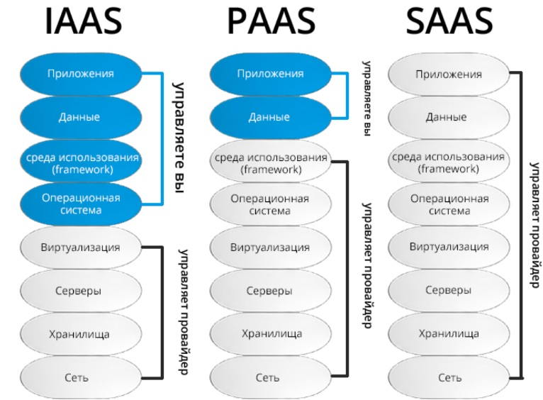
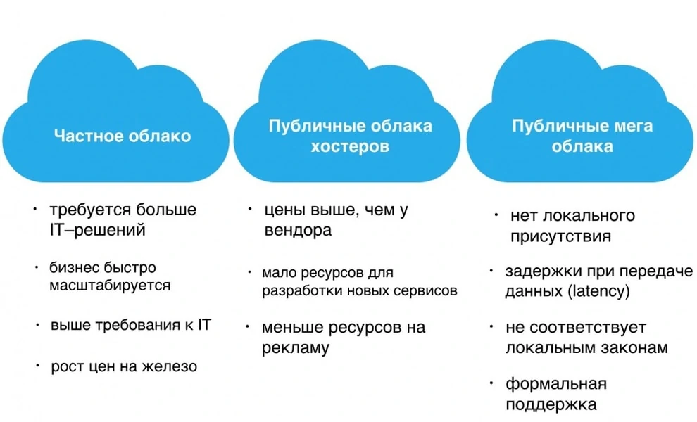

Сурцов Владимир Владимирович

IaaS — модель предоставления вычислительных ресурсов (серверов, хранилищ, сетей) в виде виртуализированных или реже физических инфраструктурных компонентов через интернет.
PaaS — модель, при которой пользователю предоставляется готовая программная платформа для разработки, тестирования, развёртывания и управления приложениями.
SaaS — модель предоставления готового прикладного программного обеспечения через интернет по подписке или на основе оплаты за использование.

Инфраструктура, предоставляемая сторонним облачным провайдером и совместно используемая множеством независимых организаций или пользователей.
Инфраструктура, предназначенная для использования одной организацией. Развёрнута, как правило, на собственных мощностях (on-premise), но возможно и у стороннего провайдера.
Сочетание публичного и частного облаков, связанных между собой для обмена данными и приложениями. Позволяет переносить рабочие нагрузки между средами.